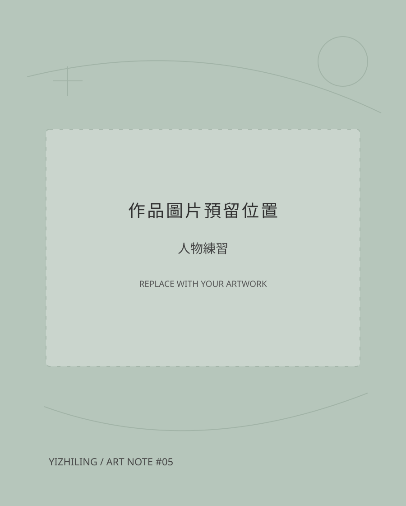

03 / About — behind the drawings
關於我✳
畫畫、記下靈感，
收集喜歡的顏色。

ARTIST NOTE / 001 ↗Hello, I'm
一枝苓↗
喜歡可愛的畫風，
也喜歡低明度、但多彩的色調。
這裡放著我的角色創作與插畫練習。希望每一張畫，都能有自己的可愛與小小個性。
FIND ME HERE
Facebook ↗看看委託資訊 →03 / About — behind the drawings
畫畫、記下靈感，
收集喜歡的顏色。

ARTIST NOTE / 001 ↗Hello, I'm
喜歡可愛的畫風，
也喜歡低明度、但多彩的色調。
這裡放著我的角色創作與插畫練習。希望每一張畫，都能有自己的可愛與小小個性。
FIND ME HERE
Facebook ↗看看委託資訊 →